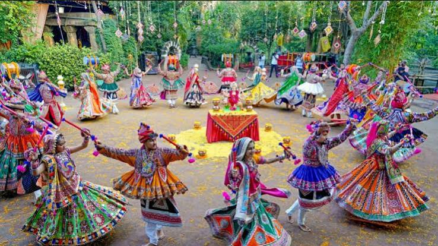
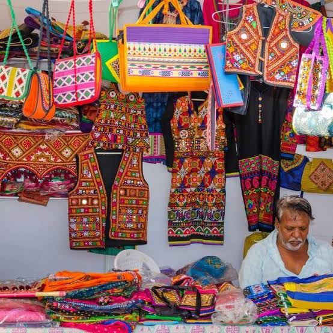

A Culture Full of Life
Gujarat is known for its welcoming people, beautiful traditions, colourful clothes, folk music and lively celebrations.

Navratri Festival
Navratri is one of Gujarat's most famous festivals. People wear traditional clothes and perform Garba and Dandiya Raas to celebrate.

Garba & Folk Dance
Garba is a traditional Gujarati dance performed in circles, especially during Navratri, with rhythmic music and energetic movements.

Art & Handicrafts
Gujarat is famous for embroidered textiles, Bandhani, Patola silk, mirror work and beautiful handicrafts made by skilled local artisans.